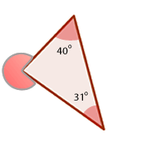
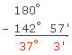

Ejercicios interactivos de triángulos
Elige la opción correcta:
1De un triángulo cualquiera sabemos que tiene un ángulo de 35° y otro de 83°, entonces el tercer ángulo mide...
Recordemos que la suma de los ángulos de un triángulo es 180°.
180 − (35 + 83) = 180 − 118 = 62
Por tanto, el ángulo que falta mide 62°
2El triángulo del ejercicio anterior es...
3Un triángulo isósceles cuyos ángulos iguales miden 45° cada uno es un triángulo...
Recordemos que la suma de los ángulos de un triángulo es 180°.
180 − 2 · 45 = 180 − 90 = 90
Entonces, el ángulo que falta mide 90°
Por tanto, se trata de un triángulo rectángulo.
4La suma de dos lados de un triángulo son 15 cm, entonces el otro lado puede medir...
Como cualquier lado de un triángulo siempre es menor que la suma de los otros dos, la única opción válida es la de 12 cm, pues es la única cantidad menor que 15 cm.
5Sabemos que la medida de dos lados de un triángulo son 2 cm y 5 cm. Entonces, el tercer lado podrá medir...
Como cualquier lado de un triángulo siempre es menor que la suma de los otros dos, el lado que falta deberá medir menos de 7 cm.
Y como cualquier lado de un triángulo siempre es mayor que la suma de los otros dos, el lado que falta deberá medir más de 3 cm.
Por tanto, el tercer lado podrá medir más de 3 cm y menos de 7 cm.
6La medida del ángulo exterior marcado en este dibujo es...
El valor de un ángulo exterior es igual a 180° más la suma de los dos ángulos interiores no adyacentes.
Por tanto, la medida del ángulo que falta viene dada por
180° + 40° + 31° = 251°
7La medida del ángulo interior del triángulo anterior es que falta es...
El valor de un ángulo exterior es igual a 180° más la suma de los dos ángulos interiores no adyacentes.
Por tanto, si llamamos a a la medida del ángulo que falta se tendría:
180° + 47° + a° = 270°
a° = 270° − 180° − 47° = 43°
8Si tenemos un triángulo equiátero cuyo perímetro es de 15 cm, su lado mide...
Como un triángulo equilátero tiene sus tres ángulos iguales basta dividir 15 entre 3, de donde, cada lado mide 5 cm.
9No es posible que un triángulo sea...
Un triángulo equilátero debe tener todos sus lados y ángulos iguales. Al ser obtusángulo debería tener algún ángulo mayor que 90°. Y por ser equilátero todos los ángulos deberían ser como este, mayor de 90°. Pero entonces la suma de los ángulos sería mayor que 270°, y tendría que ser de 180°. Por tanto, es imposible que un triángulo sea obtusángulo y equilátero.
10Sabemos que uno de los ángulos agudos de un triángulo rectángulo mide 52° 57', entonces el otro ángulo agudo mide...
180° − (90° + 52° 57') = 180 − 142° 57' = 37° 3'

Si tienes dudas puedes consultar la teoría